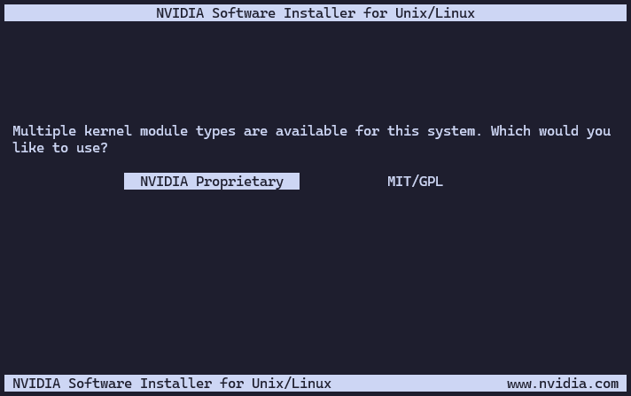
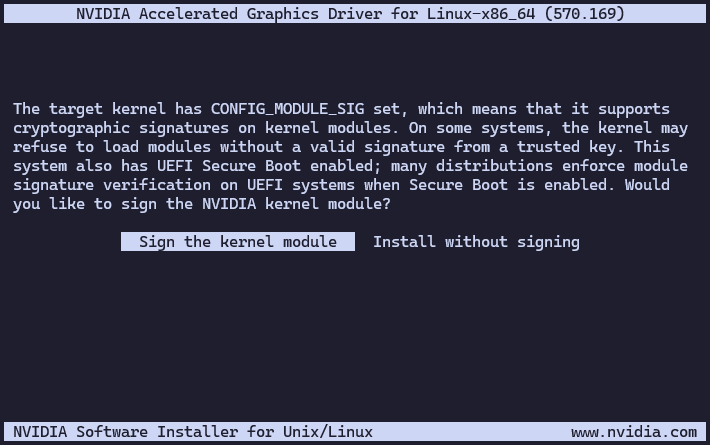
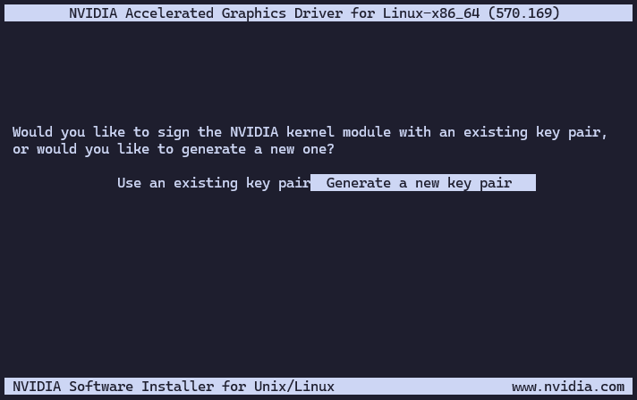
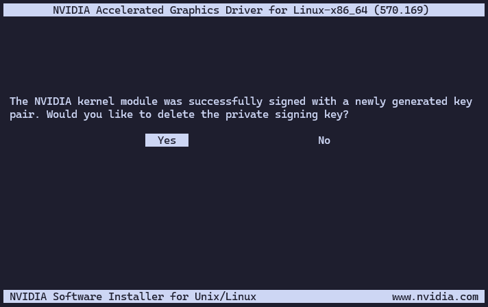
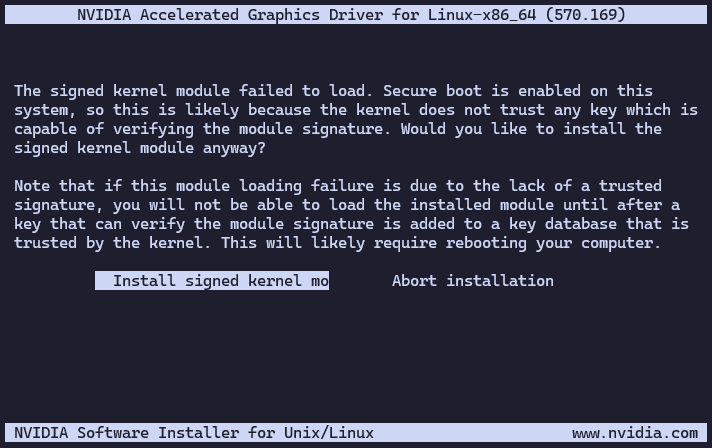
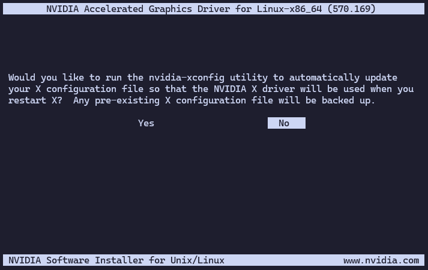

Install NVIDIA drivers
This guide will take you through the steps of installing NVIDIA (proprietary) drivers on your system.
What you’ll need
To complete this guide, you will need the following:
A Debian-based system with root access.
An NVIDIA GPU.
An internet connection to download the necessary packages.
Procedure
Follow the steps below to install the NVIDIA drivers:
Connect to your Debian-based system as the root user or use
sudofor administrative privileges.user:~$ sudo su -
Get the link to the latest NVIDIA driver from the NVIDIA Driver Downloads page, according to your GPU model and operating system. For example, you might find a link like this:
Note
The link will look something like this: https://us.download.nvidia.com/XFree86/Linux-x86_64/570.169/NVIDIA-Linux-x86_64-570.169.run
Download the NVIDIA driver using
wgetorcurl. Replace the URL with the one you copied in the previous step:root:~# wget https://us.download.nvidia.com/XFree86/Linux-x86_64/570.169/NVIDIA-Linux-x86_64-570.169.run
Make the downloaded file executable:
root:~# chmod +x NVIDIA-Linux-x86_64-570.169.run
Run the installer with root privileges:
root:~# ./NVIDIA-Linux-x86_64-570.169.runFollow the on-screen instructions to complete the installation of the proprietary NVIDIA drivers:
Choose the
NVIDIA Proprietaryoption when prompted:
Choose to sign the kernel module when prompted:

Choose to generate a new key pair when prompted:

Choose to delete the private signing key, as it is not needed after the module is signed:

Take a note of the path to the X.509 certificate on the next screen, as you will need it later. It should look something like this:
/usr/share/nvidia/nvidia-modsign-crt-793E20FB.der
Choose to install the signed kernel module when prompted:

Choose not to run
nvidia-xconfigwhen prompted:
Add the X.509 certificate you noted earlier to the MOK (Machine Owner Key) list:
root:~# mokutil --import /usr/share/nvidia/nvidia-modsign-crt-793E20FB.der
Note
Change the path to the X.509 certificate to the one you noted earlier.
You will be prompted to create a password for the MOK. Make sure to remember this password, as you will need it during the next boot.
Reboot your system:
root:~# rebootDuring the boot process, you will be prompted to enroll the MOK. Follow these steps:
Select “Enroll MOK” from the menu.
Choose “Continue” to proceed.
Enter the password you created earlier when prompted.
Select “Yes” to confirm the enrollment.
Enter the password again to confirm.
Select “Reboot” to complete the process.
After rebooting, you can verify that the NVIDIA drivers are installed and working correctly by running:
root:~# nvidia-smi Sun Jun 22 11:33:24 2025 +-----------------------------------------------------------------------------------------+ | NVIDIA-SMI 570.169 Driver Version: 570.169 CUDA Version: 12.8 | |-----------------------------------------+------------------------+----------------------+ | GPU Name Persistence-M | Bus-Id Disp.A | Volatile Uncorr. ECC | | Fan Temp Perf Pwr:Usage/Cap | Memory-Usage | GPU-Util Compute M. | | | | MIG M. | |=========================================+========================+======================| | 0 NVIDIA GeForce RTX 3060 Off | 00000000:00:05.0 Off | N/A | | 0% 62C P0 47W / 170W | 0MiB / 12288MiB | 0% Default | | | | N/A | +-----------------------------------------+------------------------+----------------------+ +-----------------------------------------------------------------------------------------+ | Processes: | | GPU GI CI PID Type Process name GPU Memory | | ID ID Usage | |=========================================================================================| | No running processes found | +-----------------------------------------------------------------------------------------+